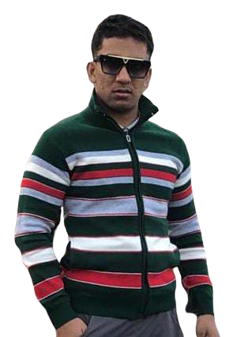

Hi, My name is Utkarsh Mishra.
and i am passionate

My Education
Diploma 2018-2021.
Hi, my name is Utkarsh Mishra i am passout diploma in year of 2021 branch of digital electroincs
from Chotu ram rural institute of technology.
percentage - 74%.
B-tech -Pursuing
Hi, My name is Utkarsh Mishra.I am Student of B-tech in branch of Computer Science Engineering.
And , i am a front-end developer. i have great knowledge in Html5, CSS, bootstrap framework,
React js and basic knowledge in JavaScript.
My Knowledge

Frontend Development-
Aspiring front-end developer eager to transform designs into user-friendly web interfaces.
Proficient in HTML, CSS, and JavaScript, with a passion for creating responsive layouts and
interactive features. Committed to staying updated with the latest front-end technologies and
best practices to deliver exceptional user experiences.

HTML, HTML5 Developer-
HTML5: Proficient in creating and structuring web content using HTML5, including understanding
of semantic elements.
HTML Forms: Familiar with building forms and handling user input in HTML.
HTML Validation: Knowledge of HTML validation techniques to ensure code quality.

Javascript-
Proficient in JavaScript fundamentals, including variables, functions, and data structures.
Basic understanding of DOM manipulation and event handling.
Keen interest in front-end frameworks like React and Vue.js, with a desire to deepen my skills.

CasCading Styles Sheet.-
Proficient in CSS basics, including selectors, properties, and styling techniques.
Familiarity with CSS layout systems like Flexbox and CSS Grid.
Enthusiasm for creating responsive designs that adapt seamlessly to different screen sizes.

Bootstrap-
Proficient in using Bootstrap's grid system for responsive web design.
Familiarity with Bootstrap's pre-built components, such as navigation bars, cards, and modals.
Keen on learning and customizing Bootstrap themes to suit project requirements.

Frame Work of React JS-
Proficient in React.js fundamentals, including components, state management, and props.
Familiarity with React Router for building single-page applications.
Eager to learn and work with Redux for advanced state management.